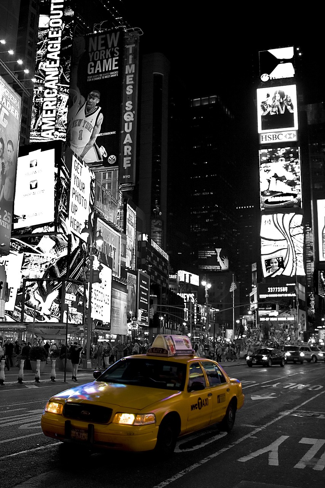

La Maison-Blanche (en anglais : The White House) est la résidence
officielle et le bureau du président des États-Unis. Elle se situe
au 1600,Pennsylvania Avenue NW à Washington D.C. Le bâtiment en
grès d'Aquia Creek et peint en blanc, construit entre 1792 et
1800,s'inspire de l'Architecture georgienne. Il est le lieu de
résidence, de travail et de réception de tous les présidents
américains depuis John Adams, deuxième président des États-Unis,
qui y entre en 1800.
Times Square est un quartier de la ville de New York, situé
dans l'arrondissement de Manhattan, qui tire son nom de
l'ancien siège du New York Times.Situé entre la 42e rue
et Broadway, il comprend les blocs (pâtés d'immeubles)
situés entre la Sixième et la Neuvième Avenue d'est en
ouest, d'une part et les blocs entre les 3e à 52e rue
du sud au nord, d'autre part. Il constitue la partie
ouest du quartier commerçant de Midtown.
Surnommé « Crossroads of the world1 », Times Square est
l'un des endroits les plus célèbres et les plus animés
au monde, à l'instar de Shibuya à Tokyo, des Champs-
Élysées à Paris ou de Piccadilly Circus à Londres :
environ 365 000 personnes s'y croisent chaque jour.
